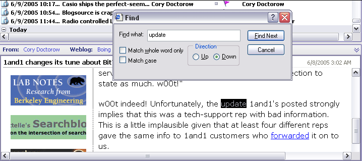

Using Find in Resource
The Find in Resource feature enables you to find words or phrases in the particular resource you are currently reading. It is like the Find feature you have probably used in a word processor or web browser. You can enter a word or phrase to search for, and specify several commonly-used options such as whole word matching, case sensitivity, and search direction in the document.
Find in Resource finds words in the document you are currently viewing
To find text in the current resource:
- Choose Search | Find in Resource on the Main menu, or press Ctrl + F.
- Enter the text you want to search for in the document. (Search Query Syntax is not applicable here).
- Select the desired options in the Find dialog and click Find Next.
The first found instance of the search word(s), if any, is highlighted in the document. You can search or additional occurrences by repeating Find Next until the end (or top) of the document is reached.